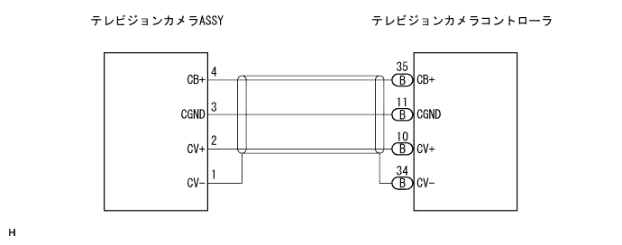
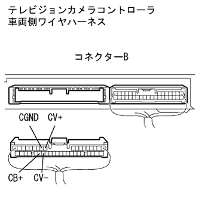
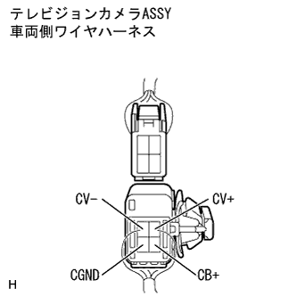
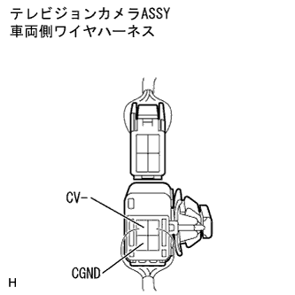
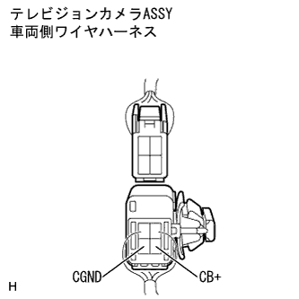
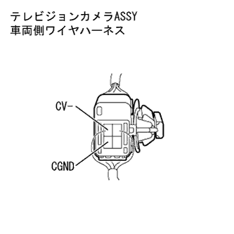

DTC C1621 Back Camera Overcurrent Malfunction |
DTC C1622 Back Camera Signal Open Circuit |
| DTC No. | Diagnosis Description | Inspection Area |
|---|---|---|
| C1621 | Back Camera Overcurrent Malfunction |
|
| C1622 | Back Camera Signal Open Circuit |
|

))| Step 1 | Recheck DTC |
Check DTC
Using SST (TaSCAN), read the DTCs by following the screen display. (see)
Select "Clear" on the screen to clear the data.
Turn IG OFF.
Recheck DTC
Start the engine, check the DTCs again, and proceed to the following destination.
| Result | Proceed to |
|---|---|
| "C1621" or "C1622" is output | A |
| No DTC Output (Normal) | B |
|
| ||||
| A | |
| Step 2 | Inspect Wire Harness and Connector (Television Camera Controller - Television Camera Assembly) |
Pre-inspection Preparation
 |
Disconnect connector B of the television camera controller shown in the illustration.
 |
Disconnect the television camera assembly connector.
Resistance Inspection
Using SST (Toyota electrical tester), measure the resistance of the wire harness between the television camera controller and the television camera assembly.
| Tester Connection (Terminal Symbol) | Condition | Standard |
|---|---|---|
| B35(CB+) - 4(CB+) | Always | Below 1 Ω |
| B11(CGND) - 3(CGND) | Always | Below 1 Ω |
| B10(CV+) - 2(CV+) | Always | Below 1 Ω |
| B34(CV-) - 1(CV-) | Always | Below 1 Ω |
| B35 (CB+) - Body ground | Always | 10k Ω or higher |
| B11 (CGND) - Body ground | Always | 10k Ω or higher |
| B10 (CV+) - Body ground | Always | 10k Ω or higher |
| B34 (CV-) - Body ground | Always | 10k Ω or higher |
|
| ||||
| OK | |
| Step 3 | Inspect Television Camera Controller (CB+, CGND, CV-) |
 |
Resistance Inspection
Connect connector B of the television camera controller and, using SST (Toyota electrical tester) with the television camera assembly connector disconnected, measure the resistance between each terminal and body ground from the back side of the vehicle side wire harness connector.
| Tester Connection (Terminal Symbol) | Condition | Standard |
|---|---|---|
| 3 (CGND) - Body ground | Always | Below 1 Ω |
| 1 (CV-) - Body ground | Always | Below 1 Ω |
 |
Voltage Inspection
Using SST (Toyota electrical tester) with the television camera assembly connector disconnected, measure the voltage between each terminal from the back side of the vehicle side wire harness connector.
| Tester Connection (Terminal Symbol) | Condition | Standard |
|---|---|---|
| 4(CB+) - 3(CGND) | IG ON, shift lever in R | 5.7 to 6.5 V |
|
| ||||
| OK | |
| Step 4 | Inspect Television Camera Assembly (CV+, CGND, CV-) |
Disconnect connector B of the television camera controller.
 |
Resistance Inspection
Using SST (Toyota electrical tester) with the television camera assembly connector connected, measure the resistance between each terminal from the back side of the vehicle wire harness connector.
| Tester Connection (Terminal Symbol) | Condition | Standard |
|---|---|---|
| 1(CV-) - 3(CGND) | Always | Below 1 Ω |
Connect connector B of the television camera controller.
 |
Waveform Inspection
Using SST (TaSCAN) with the television camera assembly connector connected, measure the waveform from the back side of the vehicle side wire harness connector.
| Item | Description |
|---|---|
| Tester Connection (Terminal Symbol) | 2(CV+) - 1(CV-) |
| Tool Setting | 0.2 V/DIV、0.2 μS/DIV |
| Measurement Condition | IG ON, shift lever in R |
|
| ||||
| OK | ||
| ||